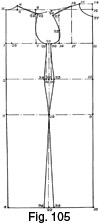
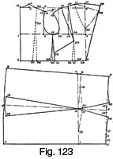

Early 1940's—Ladies' Garment Cutting and Making
by
F. R. Morris
Chapter X—Dress Cutting
THERE is a noticeable lack of systematic dress-cutting knowledge available to the trade in textbook form in comparison with the many works upon tailored garment cutting. This is no doubt due to the fact that the available cutting books have been written by craftsmen of the tailoring school who, with due credit to their abilities, possibly have had very little practical experience of dress designing, cutting and making. Anyone with cutting knowledge can evolve a system to cut any type of garment, but the opportunity of verifying the system by practical experiment may be lacking. In any case, the meagre knowledge to hand is of little use for the cutting of modern day and evening dresses with their demand for extreme closeness and perfection of fit.
The modern form-fitting dress requires as much (or, in the author's opinion, more) cutting knowledge and skill as tailored garments, for the designer is limited in the matter of the number of seams. Many seams are permissible in the cutting of coats that are impossible to incorporate with a dress design. In addition, a coat has good tailoring, canvases and linings to give it "body" and shape as well as the foundation of a dress underneath, whilst a dress is required to fit perfectly over the underslip foundation and there is no tailoring to improve the cutting effort. In short, dress cutting demands sufficient skill in the cutter to produce a garment to fit perfectly without any outside aid in the form of skill in making; that is why the author considers that dress cutting requires more knowledge and ability in comparison with tailored garment cutting.
Factors Influencing Fashion Tendencies
Modern dresses are designed to follow the figure form, and a loosely-fitting waist or hip in a dress is not appreciated by average women. They read in fashion journals like Vogue and Harper's Bazaar the news that dresses will be form-fitting this season and do not understand the cutter and dressmaker who makes them a dress differing in style from the current mode. It is useless to attempt to instruct clients these days on the fashion tendencies of the moment; they probably know more about the subject than the dressmaker and the cutter, for the increase in the number of fashion periodicals on sale is not due to an increase of interest by the trade, but by the general public.
Then we have the influence of the cinema upon fashion in dress. Film dress styles are admitted to be more advanced in style character than those even of Paris, and to the interested woman are a forecast of what is likely to be worn in the future. This means that hundreds and thousands of women who go to see a "smart" film are "dress-conscious" and, by studying the dresses shown on the screen, they possess an absolute knowledge of the latest styles. Women, too, endeavour to dress in a similar manner to that of their screen prototype; we had an example of this with the "Garbo" coats of a few years back and, more recently, the effect on current design of the many period films of the Tudor days. So it is not difficult to understand that our clients often know as much as, or more than, the dressmaker and cutter about style, which brings us back to the point that cutters must be prepared and skilful enough to cut intricate and difficult designs from which the average ladies' tailor would flinch and which would be designated by him as "impossible to cut."
Dress cutting and making is a subject apart from tailoring and a more intensive cutting ability is needed to cope with the demands of fashion, always assuming that the aim of the cutter is to achieve a perfectly fitting garment. We have also the complication of cutting dresses to measure down to anywhere in the region of a 25-inch waist with a hips size of 37 inches and a bust of 34 inches, with the proviso that the waist must measure this size and not 3 to 4 inches larger. The function of a waist belt these days is not to draw material to the figure as some people suppose. Dresses must fit in the waist without the artificial aid of a belt; evening dresses in particular are rarely seen with belts or sashes, yet the closely-fitted waist effect must be there. The "Princess" line is an example of a fitting beltless evening dress which requires a high degree of cutting skill to make successfully.
Bias Cutting
Bias cutting is another problem outside the scope of the tailoring fraternity. This operation is not so easy as just laying the pattern on the material on the cross; nowhere nearly as simple, for alteration to the pattern as made for straight layout cutting is needed when cutting on the bias; otherwise the weight of the material on the cross will pull the dress out of position at the waist, and no amount of reducing of waist size will achieve a close fit unless the hip size is reduced to less than the actual circumference first. But more on this subject at the proper time and place.
Manipulation of the Outline Pattern
The art of manipulating and cutting about of the outline pattern for close-waisted and draped effects is carried out to a greater extent in dress cutting than any other garment cutting, for successful dress cutting is impossible from a purely scientific, systematic point of view and is entirely dependent upon manipulation of the basic outline pattern for achieving results.
The author has had a great deal of experience of modern dress cutting and has studied the subject apart from tailored garment cutting. By constantly designing, cutting and making day and evening dresses he has eliminated the causes of the majority of defects common to dress cutting and, in the process, evolved a cutting method that gives satisfaction in nine instances out of ten; the exception may be due more to the fallibility of the human element than to any defect in the working of the system. No one can truthfully say that he or she never makes mistakes. The author has spent many sleepless nights over little incidents that have been due to the absence of concentration at the moment of cutting and he can say that a complete absence of trouble would turn garment cutting into a very dull job; although not everybody cares for troubles that by their magnified immensity seem to indicate the need for a complete reorganization of the cutting system!
That is by the way, but the author can state that he rarely needs to alter a dress at the try-on stage, and very often dispenses with a fitting altogether as he believes that all garments should be cut as well as possible in the first instance as though a try-on were impossible. It is the thought that alterations can be made at the try-on that lowers the standard of cutting, and, as has been stated before, if all cutters had to cut garments to finish a higher standard of craftsmanship would result.
The perfecting of the dress system was only possible after extensive practical experiment, the fact that the best was not good enough always being kept in mind. The advent of the very close-fitting dresses presented a big stumbling block, for the necessity for achieving a really close-fitting waist with the suppression correctly allocated so as not to disturb the balance of the dress by creases and folds from the waist to the centre back was not an easy problem to solve.
The author found that if he waisted the dress at the sideseams only, as was the general principle advocated by the majority of cutters at the time, a number of creases and folds appeared at the back waist hollow, giving a very unsightly appearance to the dress which was not at all approved of by the wearer. These creases naturally had to be eliminated, and, by pinning out the surplus material, something like a fit was gained. The resultant effect on the pattern of this alteration seemed to indicate the presence of more length at the sideseams than was required at the centre back waist hollow, which ultimately led the author to experiment on the lines laid down in the chapter on Waist Suppression.
The author is now confident enough to cut a dress to measure up, say, with 8 inches difference between the waist and bust measures with the sure knowledge that it will fit the figure perfectly. He believes that modelling knowledge is of importance to the dress cutter, and scientific, systematic cutting knowledge to the modeller. The combination of the two makes for a skilled craftsman, for, while modelling teaches us why we cut as we do, scientific cutting knowledge enables the foundation work to be laid easier and more accurately. We produce our basic outline by scientific means and then use our modelling knowledge in the manipulation of the basic pattern to produce the contour shape of the figure, for manipulation of the outline pattern is inseparable from successful dress cutting; it is impossible to cut a really close-fitting style by a systematic allocation of constructional points. A cutter who attempts to systematize cutting to such a degree is obviously without practical knowledge of making; the two go hand-in-hand. It would only be necessary for a cutter to shape a dress to the figure by taking in the sideseams indiscriminately, and then endeavour to press open the seams when sewn, to open his or her eyes to the necessity for providing length at the sideseams in the waist to enable the dress to conform to the shape of the figure without stress or strain. Waist shape in either a coat or a dress can only be obtained by shaping the garment to the figure on the "bends" of the body and not by reducing the size indiscriminately in the first region that suggests itself.
The Dress System
The dress system is founded upon the basic constructional points derived from the working scale constituting the basic system for coats, with alterations necessarily dictated by the closer fit required and the absence of a foundation garment.
The allowance for seams on a dress draft is not advocated, as the variable textures of the materials in use demand judgment in the matter of provision for seam allowances. For example, a lace dress would absorb anything up to ½ inch or ¾ inch seams, while a tweed of firm texture would need only ¼ inch allowances. Dress cutting and making is very different from tailoring. Dressmakers often prefer to leave a fair margin of seam allowance for letting-out purposes, whilst the tailor, when he cuts a dress, will persist in the tailoring habit of allowing ¼ inch seams and an inlay down one side of the sideseams only. It is a general rule amongst dress cutters to leave an equal amount down each sideseam in view of the necessity for matching the design in the event of an alteration involving the taking-in or letting-out of the sideseams. If an inlay is left on one sideseam only, it is impossible to match the design when an alteration takes place.
The reduction of seam allowances from the basic draft affects the back width and across-chest width in addition to the allowances made over the bust, waist and hip measures. The author does not make any allowance for ease over the hip measure when cutting the pattern. In these days the fit of the dress at this part must be perfectly close, though, of course, the type of woman dealt with must decide the degree of closeness or otherwise. But, taking into account the fact of the hip measures being taken over another dress or skirt while the dress will be actually worn over an underslip, the addition to the hip circumference thus made will provide the amount of ease necessary. For example, the author has measured women over a tweed skirt about 1 inch larger in circumference than a similar measure taken over a silk dress, which, from the practical point of view, would be equal to a measure taken over the underslip. Therefore, for the average woman he does not make any allowance for ease over the hip measure taken over a dress or skirt. This hip measure, incidentally, is taken on the figure in the position where he is going to apply it on the pattern draft. The system-makers who measure the hips at 8½ inches below the waist on the figure, and apply this quantity on their draft at a standard 7 inches down, should not wonder why their garments are always too large over the hip. There is a decrease of nearly 2 inches in circumference in the short space from 8½ inches to 7 inches below the waist line. So take all measures on the figure where they will be applied on the draft.
The allowance for ease over the tight waist measure depends upon the actual measure, and also a factor that may be thought immaterial and inconsequent is the ability of the wearer to get into the dress. This may seem rather of small importance to the cutter who is only interested in the cutting of garments to size, but it is an important fact that some women are more skilful at getting into dresses than others. The flexibility of their limbs is one of the factors governing this. The author has a friend whose dresses are made 24 inches in size at the waist; her bust size is 33 inches and her hip size 37½ inches. Her dresses are made without an opening at the side waist, yet she contrives to wriggle into them without any apparent effort. The author does not know how this is achieved; he only knows that it happens. How anyone can contrive to pass a circumference of 24 inches over another circumference of 33 inches is a mystery. This is an example of the importance of the human element in dress cutting; so cut all dresses to a predetermined standard of ease, for all women are not so expert. In contrast to the above, there are women who find difficulty in getting a dress over their shoulders when the waist is only 3 inches or so less than the bust size and with a side opening as well. It is something unexplainable, a fact which dress cutters who are practical know and appreciate, for whenever possible the author does not believe in opening the sideseam of a dress as a means of providing for ease; this sideseam opening does not improve the fitting qualities of a dress.
The author usually allows 3 inches over the tight waist measure as an average quantity for ease, the amount depending to a certain extent upon the texture of the material used. Some tweed and silk materials allow the dress to be cut closer in fit than others. For instance, a crepe silk of crinkly texture can be cut closer than a plain weave, for the elasticity of the former will give to the figure and return to shape when in place, while a plain weave will sooner split than give an inch. If the material is cut on the bias, the waist may be cut down to practically the net measure and the dress will stretch as the wearer gets into it, which makes it possible to cut dresses without a waist seam or a side opening for perfect fit.
The bust size needs very little addition for ease, unless a loose-fitting bodice effect is aimed at. The author allows ½ inch of ease over the half-bust measure. This is sufficient for dresses, as they are cut to-day, as a basic quantity. As with the hips, the fact of the bust measure being taken over the dress or blouse naturally affects the amount of ease to be allowed.
The shoulder slope, or the allowance of material needed to cover the contour shape and size of the shoulders, is reduced in quantity, owing to the need for a closer fit on the shoulder and the absence of padding of any description. There is a slight variation of the system from the coat basis for obtaining the angle of the shoulder slope on dresses. The variation is made for simplicity and does not affect the constructional points of the system elsewhere.
For practicability the system is based upon the hip measure and drafted to the hip size; that is to say, there is no hip overlap shown on the draft, and the bust circumference is reduced to size by the side-seams being suppressed by the difference between the half-hip measure and the half-bust measure after a suitable allowance for ease has been made to this quantity. This principle of construction is advocated in order to eliminate the overlapping of the sideseams at the hip, which implies the ability to draft design seams without having to consider their position in relation to the overlap and consequent crossing of the drafting lines making the pattern extremely difficult to cut out without recutting the back and front side panels twice. By drafting the dress without hip overlap, the design can be carried out on the flat from back to front, and design lines on the hip are continuous and not overlapped. When the bust circumference in comparison with the hip girth is such that no reduction of size takes place at the sideseams between the bust and hip measures, the dress is drafted to the bust measure and the hips correspondingly reduced to measure. This factor occurs in the drafting of patterns for prominent development of the bust.
Basic Construction of the Dress System (Fig. 105)
The basic system for dress cutting is illustrated by Fig. 105. For convenience the system is based on the normal 34-inch bust girth, as the divisions of the scale should be familiar by now.
Full measures are as follows—
- Chest = 32 inches.
- Bust = 34 inches.
- Waist = 25 inches, plus 3 inches for ease.
- Hips = 38 inches.
- Natural waist length = 15 inches.
- Full length = 43 inches.
- Half-back width = 6¼ inches.
- Working scale = half the bust girth = 17 inches.
No seams are allowed on the draft.
To draft—
Square from point X.
- 1 from X = the back depth = one-third of the scale plus 1½
inches.
- It will be noted there is a reduction of ¼ inch in the back-depth quantity in comparison with the basis draft for coats. This takes place owing to the need for a slightly shallower armhole with dresses than for coats, and to the fact that the dress lies closer to the back of the figure, whereas the coat requires more length to lie over the dress.
- 2 from X = the natural waist length = 15 inches. This balance line is placed higher or lower to agree with the vagaries of fashion.
- 3 from 2 = 8 inches down for the hip level.
- The position of the hip balance line never varies on the draft. Even if the fashion waist line is raised or lowered, the hip balance line remains in the same position, i.e. the position decided by its relationship to the normal waist. The author finds it an advantage to take a direct measure on the figure of the exact position of the hip line from the nape of the neck and to apply this measure to the draft irrespective of the location of the waist position.
- 4 from X = the full length of the dress = 45 inches, or to taste.
- Square out from the above-named points.
- The width of the back neck from X to 5 is made the same as for coats, i.e. one-sixth of the scale less ¼ inch.
- 6 from 5 = ¾ inch. A reduction of ¼ inch takes place at this point, as a dress lies flat to the neck and not over another garment.
- Shape the back neck run from 6 to X.
- 7 from 1 = the half-back width applied net without a seam.
- Square up from 7 to the construction line squared from X to locate point 8.
- Measure out on the hip balance line from 3 to 9 the half-hip measure net. This width is the basic constructional factor of the dress system.
- Square the front centre line from 9 to locate points 10, 11, 12 and 13.
- 14 from 11 = the back depth from X to 1 plus one-twelfth of the scale.
- Square out from 14 to 15 one-sixth of the scale.
- The across-chest width from 11 to 16 is the quantity as described for coat cutting reduced by ¼ inch, as the ¼ inch seam that is allowed round the armhole is eliminated in a system using net measures.
- Therefore 16 from 11 = half the scale less 1 inch instead of less ¾ inch.
- Square up from 16 to the balance line squared from X.
- 17 from 16 for the position of the neck point for providing the bust dart = one-sixth of the scale less ¼ inch. This reduction of ¼ inch from the position of the neck point is explained by the reduction by ¼ inch of the width from 11 to 16.
- 17 from 16 is the same quantity as for coats. The alteration to the location of point 17 does not affect the position of 16.
- Square up from 17 to 18 equal to 11 to 14 less ½ inch.
- The position of the sideseam is located by point 19, midway between 3 to 9 on the hip level. The sideseam is placed in this position in order to simplify the designing of dresses with panels and seamings of identical shape and width at back and front.
- Square from 19 to 20, 21 and 22.
- 23 from 16 = one-sixth of the scale.
- The shoulder slope is decided by the position of point 24 below 8.
- 24 from 8 = 1 inch always.
- Square out from 24 to 25 ¼ inch for the shoulder seam end.
- Join 25 to 6 and shape the shoulder seam.
- Join 18 to 26 and 25.
- 26 from 18 = the shoulder seam length equal to 6 to 25 less ¼ inch only. Additional ease for the back shoulder seam is provided when the back waist suppression is manipulated, as will be explained in the next draft.
- Square down from 26 to 27 1 inch always.
- Shape the shoulder seam from 18 to 27.
- Measure from 11 to 28 half the bust measurement plus 1 inch.
- It has been previously mentioned that the allowance for ease over the half-bust measure is ½ inch, but as ½ inch is lost at the back under the shoulder blades as described in the coat systems this must be added to the overall addition.
- 29 and 30 from 21 = the surplus amount from 1 to 28 divided equally each side of point 21.
- Shape the scye from 29 to 25 and 30 to 27, hollowing slightly in advance of the line.
- Square down from points 29 and 30 to locate 31 and 32 on the waist line.
In the chapter on Waist Suppression, the inadvisability was stressed of suppressing the sideseams of any garment to a great degree, as it is unpractical and not in accordance with the demands of the figure shape at this section. Emphasis was laid on the need for length at the sideseams and suppression on the "bends" of the body, and to this end the sideseams were suppressed only 3/8 inch each side. For a dress the author normally increases this quantity to ½ inch.
- 33 from 32 = ½ inch.
- 34 from 31 = ½ inch as above.
- For stride room from the hips to the knees, the sideseams are overlapped at the hem line from 22 to 35 and 36 by 1 inch each side.
- Shape the sideseams from 29 to 34, 19 and 35, and from 30 to 33, 19 and 36, making gradually curving seam runs as shown.
- 37 from 14 = one-sixth of the scale for the neck curve.
- Shape from 37 to 15 to complete the basis draft for dresses.
With this draft no attempt to show waist suppression is made. In the description of the following diagram this will be dealt with fully.
Continuation of the Dress System Construction (Fig. 106)
Fig. 106 shows elaboration of the system in order to allocate the waist suppression factors in their correct positions. The back waist is allocated two-thirds of the surplus quantity after the sideseams have received their quota; the remaining third is taken from the front under the bust prominence.
The measures for the draft are identical with those for Fig. 105.
To draft—
Square from X.
- 1 from X = one-third of the scale plus 1½ inches.
- 2 from X = the natural waist line = 15 inches.
- 3 from 2 = 8 inches down for the hip level.
- 4 from X = the full length = 45 inches or to style.
- 5 from X = the back neck width = one-sixth of the scale less ¼ inch.
- 6 from 5 = ¾ inch.
- Shape the back neck curve from 6 to X.
- 7 from 1 = the half-back width net.
- Square up from 7 to 8.
- Square out from 3 to 9 the half-hip measure net.
- Square the front centre line from 9 to 10, 11 and 12 and 13 at the hem line.
- 14 from 12 = one-twelfth of the scale.
- 15 from 14 = one-sixth of the scale.
- 16 from 11 = half the scale less 1 inch.
- 17 from 16 = one-sixth of the scale less ¼ inch.
- Square up from 17 to 18 the distance from 11 to 14 less ½ inch.
- 19 is located midway of the distance 3 to 9 for the position of the sideseams.
- Square up from 19 to 20 and 21 and down to 22 at the hem line.
- 23 from 8 = 1 inch always.
- Square out from 23 to 24 ¼ inch, and shape the back shoulder seam from 24 to 6.
- Shape the back-scye from 28 to 24 as indicated.
- Join 18 to 24 for the front shoulder slope angle.
- 25 from 18 = the front shoulder length equal to 6 to 24 less ¼ inch.
- Square down from 25 to 26 1 inch always, and shape the front shoulder seam from 18 to 26.
- Complete the shape of the front of the scye from 26 to the breast line, advancing ¼ inch in front of the scye line squared up from 16.
- Measure from 11 to 27 half the bust measurement, plus 1 inch.
- 28 and 29 from 21 = the difference between the half-bust and half-hip measures as shown by 1 to 27.
- Square down from 28 and 29 to 30 and 31.
- Measure from 2 to 32, adding 3 inches to the tight waist measurement (i.e. 25 inches plus 3 inches = 28 inches).
- 32 from 22 = half the dress waist measure of 28 inches = 14 inches.
- 33 from 32 = the distance from 31 to 30 plus 1 inch.
- This 1 inch is the total sideseam waist suppression from 30 and 31.
- 34 from 33 = two-thirds of the distance from 33 to 10.
- Suppress the sideseams from 31 to 36 ½ inch, and from 30 to 35 ½ inch.
- The total distance from 35 to 36 = the distance from 32 to 33.
- Shape the sideseams from 28 to 36, 19 and 37 1 inch from 22, and from 29
to 35, 19 and 38 1 inch from 22.
- The position of the back waist suppression at 39 from 2 = one-sixth of the scale. This quantity is a variable amount and is subject to alteration with differing style needs.
- 40 from 39 = the back waist suppression quantity as determined by the distance from 33 to 34.
- 41 from 3 = one-sixth of the scale plus 1 inch.
- Square down from 41 to 42.
- 43 from 6 = 2½ inches.
- Mark out the back waist suppression from 43 to 39 and 41, and from 43 to 40 and 41, suppressing ½ inch below the blade at the breast line level 44.
- 45 from 10 = one-sixth of the scale plus 1 inch.
- Square down from 45 to 46 and 47.
- 48 from 45 for the length of the waist suppression = 4 inches.
- Shape out the front waist suppression equal to the quantity shown at 34 to 10.
- 49 is midway of 11 to 16.
- Sweep 50 from 18, pivoting from 49, equal to the distance from 18 to 15.
- Shape out the bust dart from 49 to 18 and 50.
- 51 from 14 = one-sixth of the scale. Shape the neck curve from 51 to 15.
The waist suppression as indicated is suitable for a dress with panel seams in the skirt. Flare is added to the skirt at the panels if a flared skirt is required and pleats may be inserted otherwise. Enough width is added at the sideseams for the needs of stride room, and if a plain skirt is required the author does not increase this width.
The suppressions as marked are reduced from the draft immaterially to the style of the design, and are essential to the requirements of a clean waist fit. Even if the dress has a perfectly plain skirt and bodice, these suppressions must be taken out and the following diagram will illustrate the author's method of cutting a dress with a closely-fitting waist line without darts or panel seams. This draft will be the basis for interpreting intricate styles and will illustrate the principle of taking out the suppressions before the design is drafted. When cutting any garments, the requirements of fit, such as waist suppression, hip overlap, bust darts, must be satisfactorily settled, and then the design is made to harmonize and agree with the construction.
Manipulation of the Pattern for Waist Suppression (Fig. 107)
Fig. 107 shows the manipulation of the outline pattern by closing out the waist suppressions to obtain a whole back and forepart pattern. The interpretation of design is facilitated by the provision of a whole pattern instead of arranging the design on the draft and then endeavouring to take out the necessary suppression.
The back is manipulated by closing out the waist suppression from 39 to 40 by cutting up the pattern from 39 and 40 to a point at the blade where the waist suppressions terminate, and by cutting down the back shoulder from 43 to the same point on the blade and then, pivoting from the blade point, closing out the suppression to obtain a pattern outline as indicated by X to 24, 28, 36 and 2. This manipulation will result in the back shoulder width being increased by approximately ¼ inch, thus making up the ½ inch more length of back shoulder than at the front for the requirements of easing-in. It is essential to ease the back shoulder in to the front for the attainment of a clean shoulder free from creases. The closing-out of the waist suppression gives the curved waist seam, without which it would be impossible for the back section to fit closely into the waist as it passes round the figure to the side.
The back skirt section is manipulated by closing out the waist suppression from 39 to 40, and, pivoting from point 41 on the hip line, opening out the skirt width at the hem line as shown. Re-mark the skirt pattern to agree with the effect of reducing the waist suppressions.
When the skirt is required to be perfectly plain in design without panel seams, the author does not cut the skirt width any wider than the amount indicated from 13 to 38 plus 4 to 37 in Fig. 106, unless the design calls for extra flare or width. But as the closing-out of the waist suppression gives an increase of skirt width at the hem line, to counteract this extra width, he drafts his basic pattern without the addition of the overlap from 22 to 38 and 37, and makes his sideseams as 19 to 22 for both the back and front skirt. If a panel back and plain front design is needed, he does not add the overlap on the front skirt and retain it on the back. Panel skirts generally do not require manipulation of the pattern as described; the suppressions are reduced direct from the seams or from a hip yoke, and the sideseam overlap is retained as drafted. Pleats or flare may be added to the panel seams as a supplement to the skirt width, but for a narrow skirt width the author does not increase the width above the circumference indicated.
The front bodice shows the manipulation of the bust dart and the front waist suppression to obtain a whole front with an underarm sideseam dart for bust shape. Join up the bust dart and the waist suppression by continuing the bust dart down to 48, and then cut the pattern through from 18 and 50 to 48 and from 45 to 48. Cut the pattern from a point 3 inches below the breast line at 29 to link up with 48. Close out from 50 to 18 and at 45 the waist suppression which opens the underarm bust dart as shown. Mark the dart 4 inches in length as indicated.
The front skirt section is manipulated by closing out the front waist suppression at 45, and by pivoting from point 46 on the hip line to open the skirt width at the hem line from 47 to 47 and 38; and, if the skirt is required to be cut in one piece, the side-seam is reduced by the quantity of overlap shown from 22 to 38 in Fig. 106.
This completes the principles of manipulating the basic outline pattern for obtaining waist suppression in a dress without darts or panel seams.
Drafting Dress Patterns in Two Parts (Fig. 108)
Fig. 108 is recommended as an alternative system to Fig. 106, and is useful for the cutting out of dresses with an all-round waist seam. The first system described is utilized when the dress is cut in one piece without a waist seam, and in addition for waist seam designs. A feature of the system to be described is the provision for drafting the skirt waist to the exact finished size required with the extra width of the skirt hem line automatically adjusted. The overlapping of the sideseams from the hip line downwards is eliminated and the skirt section based upon a method similar to the basic skirt system.
The measures for the draft are as follows—
- Chest = 32 inches.
- Bust = 34 inches.
- Waist = 25 inches.
- Hips = 37 inches.
- Natural waist length = 15 inches.
- Full length = 42 inches.
- Skirt length = 27 inches.
- Half-back width = 6¼ inches.
- Working scale = half the bust girth = 17 inches.
Square lines from X.
- 1 from X = one-third of the scale plus 1½ inches.
- 2 from X = the natural waist length = 15 inches.
- 3 from X = one-sixth of the scale less ¼ inch.
- 4 from 3 = ¾ inch. Shape the back neck curve from 4 to X.
- 5 from 1 = the half-back width.
- Square up from 5 to 6 on the construction line squared out from X.
- 7 from 1 = the half-bust measure plus 1 inch.
- Square up and down from 7 to 8 and 9.
- 10 from 9 = one-twelfth of the scale.
- Square out from 10 to 11 one-sixth of the scale.
- 12 from 7 = half the scale less 1 inch.
- 13 from 12 = one-sixth of the scale less ¼ inch.
- Square up from 13 to 14 equal to the distance from 7 to 10 less ½ inch.
- 15 from 6 = 1 inch.
- Square out from 15 to 16 ¼ inch.
- Join 16 to 4 and hollow the back shoulder seam as shown.
- Join 14 to 16 to locate point 17.
- 17 from 14 = the distance from 4 to 16 less ¼ inch.
- 18 squared down from 17 = 1 inch.
- Shape the front shoulder seam from 14 to 18 and complete the shape of the scye from 18 to 16, hollowing ¼ inch in front of the line squared up from 12.
- 19 for the position of the sideseam = half the distance from 1 to 7.
- Square down from 19 to 20.
- 21 and 22 from 20 are each ½ inch.
- Shape the sideseam from 19 to 21 and 19 to 22.
- Measure from 2 to 23 half the waist measure (after the usual 3 inches have been added to the full quantity) plus the distance from 22 to 21.
- 24 from 23 = two-thirds of the distance from 23 to 8.
- The back waist suppression is taken out from 25 to 26, and as a general guide to the width from 2 to 25 this quantity is made equal to one-sixth of the scale.
- 26 from 25 = the distance shown from 23 to 24.
- Mark out the standard back waist suppression from 25 and 26 to 27 and 28.
- 27 from 4 = 2½ inches approximately.
- At 28 on the breast line, ½ inch is suppressed from the pattern, and the waist suppression terminates at a point on the blade level half the back depth from X to 1.
- The front waist suppression is taken out at a point one-sixth of the scale plus ½ inch from 8 to 29.
- 30 from 29 = the distance from 24 to 8.
- Shape out the front waist dart from 30 and 29 to 31, making the dart 4 inches in length.
- 32 is midway of 12 to 7.
- 33 from 14 for the bust dart = 14 to 11.
- Sweep 33 from 14, pivoting from 32, and shape out the bust dart from 32 to 33 and 14.
- 34 from 10 = one-sixth of the scale for the neck curve.
- Shape from 34 to 11 to complete the bodice top of the dress.
The Skirt
Square lines from X.
- 1 from X = 8 inches for the hip level from the waist.
- Square out from 1 to 2 the half-hip measure net.
- 3 is midway of 1 to 2.
- 4 from 2 = 1 inch.
- Join 4 to 3 and square up from 4 to 5.
- 5 from 4 = 8 inches.
- 6 is midway of X to 5.
- 6 from 3 = 8 inches.
- Line down from X to 7 the full skirt length, making up the total dress length.
- Line down from 6 and 3 to 8 equal to the distance from X to 7.
- Line down from 5 and 4 to 9 the same length as X to 7.
- Shape the bottom edge run from 7 and 8 to 9.
- Measure up the back waist and front waist seams on the bodice and make X to 10 on the skirt equal to 8 to 21 on the bodice; 5 to 11 on the skirt is made equal to 2 to 22 on the bodice.
- Shape from 10 and 11 to 3 for the continuation of the sideseams.
- Measure from 5 to 12 half the waist measure (28 inches) plus the distance from 11 to 10.
- 13 from 12 = two-thirds of the distance from 12 to X.
- 14 from X = the distance from 8 to 29 on the bodice.
- 15 from 14 = the distance from 13 to X.
- 16 from 5 = the distance from 2 to 25 on the bodice.
- 17 from 16 = the distance from 12 to 13.
- 18 from 4 = one-sixth of the half-hip measure plus ½ inch.
- 19 from 9 = the distance from 4 to 18 plus ½ inch.
- Shape out the back panel seam from 16 and 17 to 18 and 19.
- 20 from 1 = one-sixth of the half-hip measure plus ½ inch.
- 21 from 7 = the distance from 1 to 20 plus ½ inch.
- Join 20 to 21 and shape out the front panel seam from 14 and 15 to 20.
The skirt draft as shown is suitable for the construction of dress patterns with panel-seam and hip-yoke effects, and, by closing out the waist suppressions, a skirt section in one piece may be obtained. In the following drafts will be indicated the methods of adjusting the size of the waist to agree with the skirt hem line width.
Reducing the Waist Measure to Size (Fig. 109)
The reduction of the waist measure to finished size is attained in the following manner. Fig. 109 depicts the draft of the skirt section of a dress, with the usual suppressions marked out by panel seams. To eliminate the closing out of the waist suppressions and opening of the skirt hem width for obtaining a skirt section in one piece, we must endeavour to arrange the drafting alteration to give a similar effect to that attained by the usual manipulation.
The draft is based on the same measures as previous examples, and, with the exception of 12 and 13, points X to 21 are drafted as described by the text appertaining to Fig. 108.
It has been established that the front waist suppression takes one-third of the waist surplus quantity over the hip measure and the back waist suppression takes two-thirds. These quantities are marked on the draft from 14 to 15 and 16 to 17 respectively. Now the problem is to reduce the waist to the finished size and obtain a whole front and back pattern without cutting up the pattern in the process. The result must be the same in both instances. It has also to be pointed out that the width of the skirt at the sideseams must be reduced for a whole front and back skirt pattern. By the system shown, the usual overlap at the sideseams is included, and the constructional principles establish the skirt width in agreement with this factor.
To proceed, the front waist seam is required to agree with the distance from X to 10 less the quantity shown at the front waist suppression from 14 to 15. Establish point 20 on the hip balance line as a pivoting point. Then sweep an arc from 10 to 22. Measure from X to 22 equal to the previously determined front waist measure less the front suppression. Curve the waist seam from 15 to 22 as shown.
From X to 1 is 8 inches, the hip level down from the waist. The next step is to correct the depth of the hip level at the sideseam; this is necessary owing to the consequent raising of the side waist level by the action of reducing the waist to the finished size. Therefore, measure down from 22 to 23 the hip level distance, 8 inches; 23 is pivoted from 3 with the pivoting point at 20. Mark from 20 to 23 for the reconstructed hip balance line. Previously it has been stated that, in the case of plain skirts, the customary sideseam overlap from the hip level to the hem line is omitted, and the sideseams are marked down square from the hip line. Therefore, to reconstruct the skirt sideseam to agree with the elimination of the front waist suppression, square down from 23 to 24 equal to the distance from 3 to 8 on the original draft. Referring to the original draft, we find that point 8 is not squared down from 3, for the standard sideseam overlap quantity is included in the construction of the draft; so, by re-squaring the sideseam with the reconstructed hip balance line, the elimination of the sideseam overlap is effected. Shape the hem line from 7 and 21 to 24 to complete the alteration to the front skirt and the reduction of the waist size to the finished measure.
The back skirt section is treated in a similar manner. The back waist seam is required to agree in length with the distance from 5 to 11 less the back waist suppression from 16 to 17.
To proceed with the reconstruction, establish point 18 on the hip line as a pivoting point. Next sweep an arc from 11 to 25, pivoting from 18. Measure up the waist size from 5 to 25 equal to the predetermined distance from 5 to 11 less 16 to 17. Shape the waist seam from 5 to 16 and 25 as shown.
Pivoting from point 18, sweep from 3 at the side-seam to locate point 26, 8 inches from 25 as described for the front skirt construction. Mark from 18 to 26 for the reconstructed hip balance line and shape the side-seam from 25 to 26. Square down from 26 and 18 to 27 the distance from 3 to 8 for the sideseam. Shape the hem line from 9 and 19 to 27 to complete the draft.
The reconstruction of the skirt pattern to provide for a whole front and back skirt without manipulating the original basic pattern gives exactly the same result as by manipulation and may be preferred in practice. It is not always convenient to cut the pattern about to obtain the finished article, and the following basic system will provide for any variation of the waist size, and consequent skirt hem width to correspond, without the necessity for manipulating the basic pattern.
Two-piece Skirt Basis System (Fig. 110)
The following system gives the resultant skirt shape, as illustrated by Fig. 110, in a simple form, enabling all variations of the skirt waist size to be made without involving manipulation of the pattern.
Measures for the draft are as follows—
- Waist measure = 25 inches increased to 28 inches for dress drafts.
- Hip measure = 37 inches.
- Full skirt length = 27 inches.
To draft—
Square lines from X.
- 1 from X = the hip level = 8 inches down from the waist.
- Square out from 1 to 2 half the hip measure net.
- The position of the sideseam at 3 is made half the distance from 1 to 2.
- 4 from 2 = 1 inch, pivoted from 3.
- Join 3 to 4, and then square up from 4 to 5 the hip level distance from the waist line, 8 inches.
- Square back from 5 to the line squared from X.
- 6 is midway of X to 5.
- Line down from X to 7 the full skirt length.
- Line down from 6 to 3 and 9 the same distance as X to 7.
- Line down from 5 and 2 to 8 the full skirt length as X to 7.
- Shape the hem line run from 7 to 9 and 8.
- Measure up the waist size from 5 to 10 half the waist measure (28 inches).
- The sideseam suppression quantity = one-third of the distance from 10 to X to locate point 11.
- The back waist suppression = two-thirds of the distance from 11 to X to locate point 12.
- The front waist suppression is indicated from 12 to X, the remaining one-third of the waist surplus from 11 to X.
- The sideseam waist suppression is marked out from 6 to 13 and 14 equal to the distance from 10 to 11.
- Locate the pivoting point on the front hip line at one-sixth of the half-hip measure plus ½ inch from 1.
- By pivoting from point 15, sweep from 13 to 16, making from X to 16 equal to the distance from X to 13 less the quantity shown at X to 12.
- Shape the front waist seam from X to 16 as shown.
- By pivoting from 15, sweep from 3 to 17 equal top 8 inches from 16.
- Mark the hip balance line from 15 to 17 and shape the sideseam from 16 to 17.
- By line 15 to 7, square down the sideseam from 17 to 18 equal to the length of the original sideseam from 3 to 9.
- Shape the hem line run from 7 to 18.
- The pivoting point at the hip line on the back skirt is located by one-sixth of the half-hip measure plus ½ inch from 4.
- By pivoting from point 19, sweep from 14 to 20, making from 5 to 20 equal to the distance from 5 to 14 less the quantity shown from 11 to 12.
- Shape the waist seam from 5 to 20 as shown.
- By pivoting from 19, sweep from 3 to 21 equal to 8 inches from 20.
- Mark the hip balance line from 19 to 21, and then square down the back sideseam from 21 to 22, making 21 to 22 equal to 3 to 9.
- Shape the hem line from 8 to 22 to complete the skirt draft.
The amount taken out from the waist from 10 to X, or the degree to which the dress is required to fit, will naturally affect the amount of curve added to the waist seams and additionally the increase of width to the sideseams, and, therefore, the tighter the waist is required the greater will be the curving of the waist seams and consequent addition to the skirt width at the sideseams.
The preceding systems comprise the basis of all dress designing and cutting, and practical application of the systems to the interpretation of various typical styles will be shown in the following pages.
Flared Skirts and Flare Effects (Fig. 111)
While at the moment skirts for day and evening wear are very close in cut as regards the hem-line width, no doubt, in the future, skirts will once more be full in width and flared generally.
The principle of adding flare and width to a skirt hem line is based upon manipulation of the basic pattern by cutting up and opening out to obtain the required hem-line width.
Fig. 111 shows the back skirt section of a dress from the waist line to the hem with the usual back waist suppression marked to be closed out. For the purpose of illustrating the method of flare cutting, the design incorporates a plain hip yoke from the waist to the hip level and a plain flared skirt appended.
- 1 from 2 = the hip level = 8 inches down from the waist.
- 3 from 1 = the skirt length = 27 inches.
- 4 from 2 = the half-hip measure net.
- 5 from 3 = the distance from 2 to 4 plus 1 inch.
- 6 from 1 = the back waist width = 2 to 4 less 1¼ inches.
- Shape the sideseam from 6 and 4 to 5 and the hem line from 5 to 3.
- 7 from 1 = one-sixth of the half-hip measure.
- 8 from 7 = the back waist suppression = 1½ inches.
- 9 from 2 = one-sixth of the half-hip measure plus ½ inch.
- Mark out the back waist suppression from 7 and 8 to 9.
- Shape the hip yoke from 2 to 4.
- For the provision of extra width in the skirt, the pattern is cut through from 10, 11 and 12 to 13, 14 and 15 and opened out to allow for the increase of width at the hem line.
Divide the skirt hem from 3 to 5 into four divisions as shown, and square up to the hip balance line. Cut through the hip-yoke pattern from 7 and 8 to 9 and close out the suppression as shown by the diagram. Then cut up from 10 to 13, 11 to 14 and 12 to 15 and insert the required increase of width until the desired skirt hem width is obtained. The shaded portions show where width has been added by opening out the basic pattern; in this case, an increase of 3 inches takes place at each line of opening. For extra width, the pattern may be opened to agree with the extent of increase needed, and, if necessary additional opening lines may be inserted to give a gradual curve to the hip line. With regard to the shape of the hip line where it sews to the hip yoke when the skirt has been opened out the required quantities, it will give an angular run to the seam which is shaped in a gradual curve as indicated to give a very even "fall" to the flare of the skirt.
On the other hand, if a skirt is desired in which the flare hangs in distinct points instead of a gradual line, it will be necessary to retain the shape of the hip seam as found by the opening out of the skirt without re-curving of the waist seam. Then the skirt fullness will hang from the hip-yoke seam in distinct points.
Second Example of Flare Cutting (Fig. 112)
Fig. 112 illustrates the addition of flare at a low level in the skirt. The design chosen has a panel seam from the hip level diverging towards the centre front of the skirt and then turning back to terminate at the sideseam below the knee level. Flare is required to be inserted in the skirt at a low level to give a slim-skirt effect with a full hem line.
Fig. 112 shows the draft of the front skirt section. Points 1, 2, 3 and 4 indicate the outline; 5 from 3 for the commencement of the panel seam equals 3½ inches. Shape the panel seam 14 inches towards the centre front and then divert the seam into the side-seam at point 7, 12 inches up from the hem line at 4 The seam from 6 to 7 is then cut through, and the pattern cut up from three points from the hem line as shown by 8 to 11, 9 to 12, and 10 to 13. These three lines are the flaring lines and are opened out to resemble the reconstructed skirt section as shown by the second draft. Pivoting from point 11, 3 inches of extra width is inserted in the skirt from 8 to 8. Pivoting from point 12, the same quantity of extra width is inserted at 9 to 9; pivoting from point 13, insert an identical amount from 10 to 10 to obtain the reconstructed shape of the skirt from 11 to 7 and 4 to 10, 9, 8 and 2. When the curved seam from 6 to 11, 12, 13, and 7 sews to the straight skirt seam from 6 to 7 as shown on the first draft, a soft fluting effect in the lower skirt section will be obtained.
All flares are cut by these basic principles, as are also basque effects, frills, flared shoulder capelets, etc.
It is now time to commence dress pattern cutting to designs, necessarily of simple construction at first for showing the application of the principles of waist suppression and its consequent effect upon the design.
A Simple Dress Design (Fig. 113)
The first example chosen has a simple line of design that is very slim and effective in wear. The design is one that is repeated every season, and its chief characteristics are a high waist line effect achieved by a curving front waist seam and a slender skirt effect obtained by a panel seam diverging from a high hip level at the sideseams.
The measures for the draft are as follows—
- Chest = 32 inches.
- Bust = 34 inches.
- Waist = 25 inches (increased by 3 inches for a dress draft).
- Hips = 38 inches.
- Natural waist length =15 inches.
- Full length = 43 inches.
- Half-back width = 6¼ inches.
- Working scale = half the bust girth = 17 inches.
To draft—
Commence by drawing line X to X, the full length of the dress.
- 1 from X = one-third of the scale plus 1½ inches for the back depth.
- 2 from X = the natural waist level.
- 3 from 2 = the hip level = 8 inches down from the waist line.
- Square out from the above points.
- The width of the back neck from X to 4 = one-sixth of the scale less ¼ inch.
- 5 from 4 for the height of the back neck curve = ¾ inch.
- Shape the back neck curve from 5 to X.
- 6 from 1 = the half-back width.
- Square up from 6 to 7.
- 8 from 3 on the hip line = the half-hip measure applied net.
- Square from 8 to 9, 10, and 11.
- 12 from 10 = the back depth X to 1.
- 13 from 12 = one-twelfth of the scale.
- Square out from 13 to 14 one-sixth of the scale.
- 15 from 10 = the across-chest width = half the scale less 1 inch.
- Square up from 15 to the line squared from X to 12.
- 16 from 15 = one-sixth of the scale less ¼ inch.
- Square up from 16 to 17 equal to the distance from 10 to 13 less ½ inch.
- 18 from 7 = 1 inch on the line from 7 to 6.
- 19 from 18 = ¼ inch.
- Join 19 to 5 and hollow the shoulder seam as shown.
- 20 from 17 = the back shoulder width from 5 to 19 less ¼ inch.
- 21 squared down from 20 = 1 inch. Shape the front shoulder seam from 17 to 21.
- The location of the sideseam is at 22, midway of 3 to 8.
- Square up and down from 22 to 23, 24 and 25.
- Add the sideseam overlap from 25 to 26 and 27 and shape to 22.
- Measure from 10 to 28 half the bust measurement plus 1 inch.
- Reduce the surplus from 28 to 1, at 29 and 30 from 24.
- Shape the scye as shown from 29 to 19 and 30 to 21, hollowing ¼ inch in advance of the line from 15.
- Square down from 29 and 30 to 31 and 32 on the waist line.
- 33 from 32 = ½ inch.
- 34 from 31 = ½ inch.
- Shape the sideseams from 29 and 34 to 22 and from 30 to 33 and 22.
- Continue to the hem line, adding 1½ inches of flare from 26 to 35 and 27 to 36, commencing from a point 14 inches from the hem on the overlap sideseam lines from 22 to 26 and 27.
- Measure from 2 to 37 half the waist measure (28 inches) plus the distance from 34 to 33.
- 38 from 37 for the quantity of back waist suppression = two-thirds of
the surplus quantity shown from 37 to 9.
- The first step towards the interpretation of the design is to mark out the necessary waist suppressions, and then mark the design to agree with the constructional suppression lines.
- Mark out the back waist suppression as follows—
- 39 from 2 = one-sixth of the half-hip measure. This quantity is variable and must not be taken as a fixed division.
- 40 from 39 = the back waist suppression, as shown from 37 to 38.
- 41 from 3 for the width of the panel seams on the hip level = one-sixth of the half-hip measure plus ½ inch.
- Square down from 41 to 42 at the hem line.
- Mark out the back waist suppression from 39 and 40 to 41.
- 43 from 5 = 2½ inches. Mark from 39 to 43 and from 40 to 44 at the blade level.
- Mark out the front waist suppression from 9 to 45 one-sixth of the half-hip measure.
- 46 from 45 = the quantity shown from 38 to 9.
- 47 from 8 for the width of the front panel seam equals the same distance as 41 is from 3 at the back.
- Square down from 47 to 48 for the line of the front panel seam.
- Mark out the bust dart from 17 to 49 equal to the distance from 17 to 14.
- 50 is located midway of 10 to 15.
- 51 from 50 = 2 inches.
- Shape out the bust dart from 17 and 49 to 50 and 51 to join up with the front waist suppression from 45 and 46 to 51.
- The termination of the skirt panel seams at the sideseams is made 3 inches down from the waist line.
- 52 from 33 = 3 inches.
- 53 from 34 = 3 inches.
- 54 from 47 = 1½ inches.
- 55 from 41 = 1½ inches.
- Shape from 52 to 54 and 47 and from 53 to 55 and 41.
- Shape the front panel seam from 47 to 56 and 57, adding 2 inches of flare to the seams from 48 to 56 and 57.
- Shape the back panel seam from 41 to 58 and 59, adding 2 inches of flare to the seams from 42 to 58 and 59.
- The V-neck line is made 8 inches in length from 14 to 60; join 14 to 60
and hollow ½ inch.
- It is essential that the neck opening is not made less than 22 inches in size all round, otherwise the wearer will find difficulty in getting her head through the opening.
- Now we come to the interpretation of the design on the draft.
- The front waist seam curves to a point 6 inches above the natural waist line at 61 from 9, and at the sideseam is 1½ inches above the waist line.
- Shape the high waist seam from 61 to 64 1½ inches above 33, and where
the seam intersects the front waist suppression at 62 and 63 mark the waist
seam to intersect the suppression lines at right-angles, so that when the
waist suppression is closed out for the pattern the high waist seam will run
in one continuous line as 62 to 45 will be equal to 63 to 46.
- This is the principle of applying design to all waist suppression lines; where the design intersects the waist suppression lines, a "break" is made in the line of the design to enable the design line to become continuous when the suppressions are taken out. If this "break" was not made and the design line taken straight through the suppression lines, when suppression was taken out the design line would be broken instead of continuous.
- 56 from 34 = 1½ inches.
- Shape the high waist seam to terminate at the natural waist line at 2.
- 66 and 67 show where the high waist seam is broken at the back waist
suppression, so that when the suppression is closed out of the skirt and the
back sections the waist seam will continue in one line.
- The front has a seam through the waist from 33 to 9 to enable the suppression to be taken out. At the back waist, the high waist seam is sufficiently near the natural waist level to dispense with a through waist seam.
Application of the Waist Suppression (Fig. 114)
The manipulation of the outline pattern to eliminate the waist suppression quantities and produce shape in the dress is illustrated by Fig. 114.
The back section is indicated by (a).
Cut up the pattern from 66 and 67 to 44 and from 44 to 43. Then, pivoting from 44, close out the back waist suppression from 66 to 67 to open the shoulder at 43. Re-mark the outline of the pattern after the suppression has been closed out to agree with the outline as indicated by the solid lines from X to 5, 43, 19, 29, 65, 67 and 2. The increase of width in the back shoulder seam given by the closing out of the suppression makes up the usual ½ inch extra width in comparison with the front shoulder seam which is essential if a clean shoulder is desired. As the author has repeatedly stressed, the majority of creases in shoulders are caused by neglect of this very small detail of making.
The back skirt section is indicated by (b).
The waist suppression is shown by the dash lines from 66 and 67 to 55.
Close out the waist suppression by cutting through the pattern from 66 and 67 to 55 and, by pivoting from 55, close 66 to 67 to obtain the outline as shown by points 2, 67, 65, 53, 55 and 58 to X. The flare added to the panel seam is indicated in the diagram from 55 to 58.
The side panel is illustrated by (c).
One panel only is shown, for the front panel is made equal in shape and size to the back. It is always advisable to aim at uniformity in design, instead of cutting the back design a different size from that of the front.
The front bodice section is illustrated by (d).
With this design, a bust dart through the shoulder is not required, and provision for the bust shape is made by easing the top section into the high waist seam either in the form of darts or by a drawing-in of the extra width caused by the opening of the bust dart, in the form of gathers.
Cut through the pattern from 17 and 49 to 50 and 51 and from 63 and 62 to 51. By pivoting from 51, close out the bust dart from 17 to 49 to open the waist seam at 62 and 63 as shown. The extra length thus obtained in the waist seam from 60 to 62 and 64 is either darted or gathered out under the bust prominence in the waist seam. From 14 to 60, 61, 62, 64, 30, and 21 indicates the outline of the bodice pattern after manipulation and elimination of the bust and waist darts.
The waist section is indicated by (e).
Close out the waist suppression from 62 to 63 and 45 to 46 to obtain the outline shape as shown by the solid lines from points 61 to 9, 45, 33, 64, and 62.
The front skirt section is indicated by (f).
Cut through the pattern from 45 and 46 to 54 and close out the front waist suppression by pivoting from 54 to obtain the outline as indicated by the points 9, 11, 57, 54, 52, 33 and 45.
The closing out of the waist suppressions gives the necessary curve to the waist seams, without which it would be impossible for a dress to fit perfectly into the waist round the curves of the figure.
 A Dress Design without a Sideseam
from Hip Level to Hem Line (Fig. 115)
A Dress Design without a Sideseam
from Hip Level to Hem Line (Fig. 115)

The following example of design illustrates a smart dress cut without a sideseam from the hip level to the hem line. The fronts of the dress fasten high to the throat with an opening down the centre to the bust level and are fastened with buttons so as to enable the wearer to get into the dress. From the bust level a yoke is marked from the front to end at the centre back, 3 inches above the natural waist line.
The skirt has a similar yoke design carried out in the form of a curving seam from the centre front of the skirt, terminating in panel seams from the hip level downwards at the back skirt. A centre front seam is shown, with an inverted pleat inset. Pockets are inserted in the hip yoke each side, and the skirt from the centre front to the panel seams at the back is cut in one piece without a sideseam. This is a very slim design, for the skirt is intended to hang straight from the hips with the inverted pleat giving the necessary stride-room.
With regard to the cutting of the skirt without a sideseam, this is achieved by first cutting the pattern in the usual way and then laying the sideseams together and recutting in one piece. The front skirt is designed without panel seams; so, when the waist suppression is closed out, the skirt is opened out at the hem line. Therefore, the sideseam normal overlap must be reduced on the outline pattern, while, at the back skirt, it is included as usual.
Measures for the draft are as follows—
- Chest = 33 inches.
- Bust = 35 inches.
- Hips = 39 inches.
- Waist = 27 inches, increased to 30 inches for the dress draft.
- Natural waist length = 15¼ inches.
- Full length = 42 inches.
- Half-back width = 6½ inches.
- Working scale = half the bust girth = 17½ inches.
To draft—
Commence by drawing line X to X, the full length of the dress.
- 1 from X = the back depth = one-third of the scale plus 1½ inches.
- 2 from X = the natural waist length = 15¼ inches.
- 3 from 2 = 8 inches down for the hip level.
- The back neck width from X to 4 is made one-sixth of the scale less ¼ inch.
- 5 from 4 = ¾ inch. Shape the back neck curve from 5 to X.
- 6 from 1 = the half-back width applied net.
- Square up from 6 to 7 on the line squared out from X.
- Square out from 3 the hip level line, and apply half the hip measure net from 3 to locate point 8.
- Square from 8 to 9, 10, 11 and 12.
- Square up from 12 to 13 one-twelfth of the scale.
- Square back from 13 to 14 one-sixth of the scale.
- Square back from 10 to 15 the across-chest width, i.e. half the scale less ¼ inch.
- 16 from 15 = one-sixth of the scale less ¼ inch.
- Square up from 16 to 17 equal to the distance from 10 to 13 less ½ inch.
- 18 from 7 on the line from 7 to 6 = 1 inch.
- 19 from 18 = ¼ inch. Join 19 to 5 and shape the back shoulder seam run between these points as shown.
- 20 from 17 = the back shoulder width from 5 to 19 less ¼ inch for the width of the front shoulder seam.
- 21 from 20 = 1 inch. Shape the front shoulder seam from 17 to 21.
- The sideseams are located at half the distance from 3 to 8 at 22.
- Square up and down from 22 to 23, 24, and 25.
- The front skirt sideseam is as 22 to 25, for, owing to the opening of the front skirt by the closing out of the waist suppression and consequent increase of width in the hem line, no addition of skirt width by the usual sideseam overlap is needed.
- The back sideseam from 22 is overlapped 1 inch from 25 to 26.
- Measure from 10 to 27, making this quantity equal to half the bust measure plus 1 inch.
- Reduce the surplus quantity from 1 to 27 at the sideseams from 24 to 28 and 29.
- Square down from 28 and 29 to 30 and 31.
- 32 from 31 = ½ inch.
- 33 from 30 = ½ inch.
- Shape the sideseams from 28 to 33 and 22 and from 29 to 32 and 22.
- Measure from 2 to 34 half the waist measure (30 inches) plus the distance from 33 to 32.
- The back waist suppression = two-thirds of the waist surplus from 34 to 9 as shown from 34 to 35.
- From 35 to 9 = the front waist suppression.
- Shape out the back waist suppression from 2 to 36 one-sixth of the half-hip measure.
- The width of the back panel seam from 3 to 37 = one-sixth of the half-hip measure plus ½ inch.
- Square down from 37 to 38 for the run of the back skirt panel.
- Shape out the waist suppression from 36 to 39 equal to the quantity shown from 34 to 35.
- Mark from 36 and 39 to 37 and from 36 to 40 2½ inches from 5.
- Shape from the blade level at 41 to 39 to complete the construction lines indicating the quantity of back waist suppression to be reduced.
- Shape out the front waist suppression from 9 to 42 equal to one-sixth of the half-hip measure.
- 43 from 8 = one-sixth of the half-hip measure plus ½ inch.
- Square down from 43 to 44 at the hem line.
- 45 from 42 = the front waist suppression.
- Shape from 42 and 45 to 43 and make the dart end in the yoke seam.
- 46 is midway of 15 to 10.
- Shape out the bust dart from 17 to 47 equal to the distance from 17 to 14.
- 48 from 46 = 2 inches. Shape from 48 to 17 and 47.
- The front yoke commences ½ inch below the breast line at point 49.
- Square out from 49 to 50 3 inches or a similar quantity in proportion to the increase or decrease in bust girth.
- 51 from 32 = 3 inches.
- Shape the yoke seam from 49 to 50 and curve to 51.
- 52 from 33 = 3 inches.
- Square across from 52 to 53, 54 and 56 3 inches from 2.
- Shape the front waist dart from 45 and 42 to terminate at the yoke seam from 50 to 51.
- 57 from 13 = one-sixth of the scale for the neck curve.
- Shape from 57 to 14.
- Add on from 57 to 58 ¾ inch for the button-hole side of the front neck opening, and from 58 to 59 ¾ inch extra for the button-stand side.
- Square down from 58 and 59 to intersect the continuation of the line from 49.
- The skirt yoke commences 2 inches below the natural waist line at 60 from 9.
- 61 from 60 is made equal to the distance from 49 to 50.
- 62 from 43 = 5½ inches. Shape the hip yoke seam from 61 to 62, breaking squarely at the front waist suppression as marked at 62 and 63, making 62 from 43 equal to 63 from 43.
- 64 from 32 = 6 inches. Shape from 63 to 64.
- 65 from 33 = 32 to 64.
- Shape the back panel seam from 65 to a point 1 inch above 37.
- Shape the back panel seam from 37 to 66 and 67, adding 1 inch of flare to each seam.
- The front inverted pleat commences at 17 inches from the hem line at 68 from 11, and 4 inches are allowed for the pleat from 68 to 69 and 70.
- Mark the pleat as shown, notching 1½ inches in from 68 to 69.
- Square down from 69 and 70 to 72 and 71 for the completion of the
draft.
- The front skirt is cut on the crease from 70 to 71 to obviate the necessity for cutting the pleat unequally on each side of the fronts.
Reconstruction of the Outline Pattern (Fig. 116)
Fig. 116 illustrates the manipulation of the outline pattern to reduce the waist suppressions from the draft and to cut the skirt section in one piece without a sideseam.
The back is illustrated by (a).
Cut up the pattern from 36 and 38 to the blade at 41 and from 40 to this point. By pivoting from 41, close out the back waist suppression from 36 to 38 to open the back shoulder seam from 40. Point 53 closes back to 54, and the outline of the reconstructed pattern is indicated by points X to 5, 40, 19, 28, 33, 36 and 2. The high waist seam is shaped from 52 to 54 and 56, and, though curved in appearance on the pattern as it is now drafted, when on the figure and following the natural curves of the body it assumes a straight line.
The back skirt section is illustrated by (b).
Cut through the pattern from 36 and 30 to 37, and, by pivoting from 37, close out the waist suppression from 30 to 36 as shown to obtain a pattern outline as indicated by points 2 to 36, 33, 65, 37, and 66 to X.
The front bodice section is illustrated by (c).
The reconstruction of the front bodice section is simple, as the waist suppression and the bust dart both terminate at the dividing seam instead of cutting through it.
Cut through the outline pattern from 17 and 47 to 50 and close out the bust dart from 17 to 47 to obtain a pattern outline as 14 to 57, 58, 59, 49, 50, 48, 51, 29, and 21.
Cut through the waist dart from 42 and 45 to the yoke seam and close out the suppression from 42 to 45 to obtain the pattern outline as indicated by points 49 to 50, 48, 51, 32, 42 and 9.
The skirt yoke is illustrated by (d).
Cut through from 62 to 42 and 63 to 45 and close out the waist suppression as shown, obtaining the outline indicated by 9 to 60, 61, 62, 64, 32, and 42. It will be noticed that the hip-yoke seam from 61 to 62 and 64 becomes a continuous run when the suppression is reduced, in comparison with the broken run shown on the draft originally. A facing must be allowed from 61 to 62 and 64 for the pocket when cutting from the material.
The front skirt section is illustrated by (e) and (f).
Cut through the pattern from 62 and 63 to 43 on the hip line and up from 44 to 43. By pivoting from point 43, close out the waist suppression from 63 to 62 until the run from 62 to 61 and 64 becomes continuous. The skirt hem width will increase from 44 to 44A, but as a reduction of width has taken place at the sideseam by the elimination of the usual sideseam overlap, this increase is necessary for stride-room. A pocket facing will require to be allowed for on the hip seam from 61 to 64, equal in length to the desired pocket mouth length.
To cut the front skirt in one piece with the back panel, all that is required is the laying together of the back and front sideseams as shown.
A Panelled Dress Design (Fig. 117)
Fig. 117 illustrates the draft of a panelled dress design in which panel seams at the back and front terminate on the shoulders in the armhole, and on the skirt end in knife pleats. With a design of this character, waist suppression can be taken out direct without any manipulation of the outline pattern by cutting up and closing out the necessary suppressions. A centre-front opening to the waist level is shown, fastening with buttons, and as this cannot be allowed for in one piece with the skirt section, a seam must be run through the waist between the two front panel seams; otherwise, the bodice and skirt of the dress are cut through without a waist seam from back to front.
Measures for the draft are as follows—
- Chest = 36 inches.
- Bust = 38 inches.
- Waist = 29 inches, increased to 32 inches for the dress draft.
- Hips = 41 inches.
- Natural waist length = 15½ inches.
- Full length = 44 inches.
- Half-back width = 6¾ inches.
- Working scale = one-third of the bust girth plus 6 inches = 18¾ inches.
To draft—
Commence by drawing line X to X, the full length of the dress, i.e. 46 inches.
- 1 from X = the back depth = one-third of the scale plus 1½ inches.
- 2 from X = the natural waist length = 15½ inches.
- 3 from 2 = 8 inches down for the hip level.
- The back neck width from X to 4 = one-sixth of the scale less ¼ inch.
- 5 from 4 for the height of the back neck curve = ¾ inch.
- Shape the back neck curve from 5 to X as shown.
- 6 from 1 = the half-back width.
- Square up from 6 to 7 on the line squared out from X.
- Square out from 3 to 8 half the hip measure applied net.
- Square up and down from 8 to locate points 9, 10, 11 and 12.
- 13 from 12 = one-twelfth of the scale.
- Square out from 13 to 14 one-sixth of the scale.
- The across-chest width from 15 to 10 for all sizes of bust girth over 36 inches equals one-fourth of the bust measure less 1 inch.
- 16 from 15 = 2¾ inches for all sizes of bust girth over 36 inches.
- Square up from 16 to 17 equal to the distance from 10 to 13 less ½ inch.
- 18 from 7 on the line from 7 to 6 = 1 inch.
- 19 from 18 = ½ inch. Shape the back shoulder seam from 19 to 5.
- 20 from 17 = the front shoulder width = 5 to 19 less ½ inch.
- Square down from 20 to 21 1 inch, and shape the front shoulder seam from 21 to 17 as shown.
- The sideseam is located at 22, half the distance from 3 to 8.
- Square up and down from 22 to 23, 24 and 25.
- Add the sideseam overlaps from 25 to 27 and 26, 1 inch in each instance unless a wider skirt is desired.
- Measure from 10 to 28 half the bust measurement plus 1 inch.
- Reduce the surplus shown by 28 to 1 from the sideseams at 24 to 29 and 30
- 31 and 32 from 23 = 29 and 30 from 24.
- 33 from 32 = ½ inch.
- 34 from 31 = ½ inch.
- Shape the sideseams from 29 to 34, 22 and 26 and from 30 to 33, 22 and 27.
- Measure from 2 to 35 half the waist measure (32 inches) plus the distance from 34 to 33.
- The back waist suppression is indicated by two-thirds of the distance from 35 to 9 in order to locate point 36.
- From 36 to 9 indicates the front waist suppression.
- The width of the panel seam at the back waist from 2 to 37 = one-sixth
of the half-hip measure.
- The width of the panel seam at the hip level should be slightly increased to accentuate the slender effect at the waist, and ½ inch is added to the distance from 2 to 37 when deciding the width of the hip panel from 3 to 38.
- When pleats are inserted in the panel seam it is advisable to spring the panel seam out slightly from the hip line to the hem.
- Therefore, 39 from X = 3 to 38 plus ½ inch.
- 40 from 37 = the back waist suppression as indicated by the quantity from 35 to 36.
- Shape out the back waist suppression from 37 and 40 to 38 and 39.
- 41 from 6 for the termination of the panel seams in the armhole = half the back depth from X to 1.
- Mark back from 41 to 42 2½ inches, and lower the seam run ¾ inch.
- Shape the waist suppression from 37 to 42 and from 40 to 42, suppressing
½ inch on the breast line at 43.
- The width of the front panel is made identical with the width of the back panel. The author always advocates, when cutting an even design, having the back and front seam runs equal in size and shape if possible; otherwise, a lack of harmony and line becomes apparent. For instance, if the wearer of a panelled-seam dress was at all well developed on the hips, to make the back panels greater in width than those at the front would tend to exaggerate the increase of girth rather than minimize it, whilst, by making seam runs of equal size, the attention is focused elsewhere, and an appearance of equality in size at back in comparison with the front is given.
- Therefore, from 9 to 44 equals the same distance as 2 to 37, i.e. one-sixth of the half-hip measure.
- The front waist suppression from 44 to 45 = the quantity shown from 36 to 9.
- 46 from 8 = one-sixth of the half-hip measure plus ½ inch.
- 47 from 11 = one-sixth of the half-hip measure plus 1 inch.
- Both these two measures are equal in size to the back panels.
- 48 is midway of 15 to 10.
- Shape out the bust dart from 17 to 49 equal to 14 to 17.
- 50 from 48 = 2 inches, shape out the bust dart and the front waist suppression from 17 to 48, 50, 44, 46 and 47 and from 49 to 50, 45, 46, and 47.
- 51 from 48 for the diverging of the panel seam into the armhole = 3½ inches.
- Square across from 51 to 52, making 52 from 50 equal to 51 from 50.
- Shape the termination of the panel seam into the arm-hole from 52 to 53, making 53 from 15 equal to 41 from 6.
- The high neck line at the front is made one-sixth of the scale down from 13 to 54. Shape the neck curve from 54 to 14.
- Add ¾ inch on the front edge from 54 to 55 and an additional ¾ inch from 55 to 56 for the button-stand side.
- Square down from 55 and 56 to 57 and 58 on the waist line.
- The front and back knife pleats are added from nothing at the knee-level to 3 inches in width at the hem line.
- 59 from 47 = 17 inches.
- Add the pleat to the centre front and side panel by marking from 59 to 60 and 61, making each point from 47 equal to 3 inches.
- 62 from 39 = 17 inches.
- Add the pleat to the centre back and side-panel seams from 62 to 63 and 64, making each point 3 inches from 39 to complete the draft.
The bust dart is closed out of the shoulder from 51 to 52 and 17 to 49 to complete the manipulation of the pattern; otherwise, the draft is straightforward in character. The centre back panel is cut whole from neck to hem as also are the two side panels. A seam must be placed through the waist from 44 to 58 to enable a centre front button fastening to terminate in the waist line.
A Dress with Draped Bodice and Skirt (Fig. 118)
The dress illustrated by Fig. 118 is a typical example of a smart town dress with draped effects at the neck line, under the bust, and at the centre front of the skirt.
The neck line is cut in at each side by two seams, permitting the neck to be gathered-in to form the draped effect, while the bodice is designed with a panel effect to allow for the waist to be well shaped to the figure.
A three-quarter sleeve is shown in the design with a gathered-in effect at the elbow.
Measures for the draft are as follows—
- Chest = 34 inches.
- Bust = 36 inches.
- Waist = 28 inches, increased to 31 inches for the dress draft.
- Hips = 39 inches.
- Natural waist length = 15½ inches.
- Full length = 42 inches.
- Half-back width = 6½ inches.
- Working scale = half the bust girth = 18 inches.
To draft—
Commence by drawing line X to X, the full length of the dress, i.e. 42 inches.
- 1 from X = the back depth = one-third of the scale plus 1½ inches.
- 2 from X = the natural waist length = 15½ inches.
- 3 from 2 = 8 inches down for the hip level.
- The back neck width from X to 4 = one-sixth of the scale less ¼ inch.
- 5 from 4 = ¾ inch. Shape the back neck curve from 5 to X.
- 6 from 1 = the half-back width.
- Square up from 6 to 7 on the line squared out from X.
- Square out from 3 to 8 the half-hip measure applied net.
- Square up and down from 8 to 9, 10, 11 and 12 at the hem line.
- 13 from 11 = one-twelfth of the scale.
- Square out from 13 to 14 one-sixth of the scale.
- 15 from 10 for the across-chest width = half the scale less 1 inch.
- 16 from 15 = one-sixth of the scale less ¼ inch.
- Square up from 16 to 17 equal to the distance from 10 to 13 less ½ inch.
- 18 from 7 on the line from 7 to 6 = 1 inch.
- 19 from 18 = ¼ inch. Shape the back shoulder seam from 19 to 5 as shown.
- 20 from 17 = the back shoulder width from 5 to 19 less ¼ inch.
- Square down from 20 to 21 1 inch, and shape the front shoulder seam from 17 to 21.
- The sideseam is located at half the distance from 3 to 8.
- Square up and down from 22 to 23, 24 and 25 at the hem line.
- 27 from 10 = half the bust measure plus 1 inch.
- Reduce the surplus quantity shown from 27 to 1 at the sideseams from 24 to 28 and 29.
- Square down from 28 and 29 to locate points 31 and 30 on the waist line.
- 32 from 30 = ½ inch.
- 33 from 31 = ½ inch. Shape the sideseams from 29, 32 and 22 and from 28 to 33 and 22.
- Add 1½ inches of flare to each sideseam from 25 to 35 and 34 to complete the shaping of the sideseams from 22.
- Measure from 2 to 36, making this distance equal to half the waist measure (31 inches) plus the distance from 32 to 33.
- The back waist suppression equals two-thirds of the surplus shown from 36 to 9.
- The front waist suppression takes the remaining third of the surplus.
- 38 from 2 for the position of the first dart = one-sixth of the half-hip measure.
- 39 from 38 for the second dart = 1½ inches.
- Suppress the darts by the quantity shown from 36 to 37 equally divided.
- Mark back from 14 to 40 = 2 inches for the position of the shoulder dart.
- 41 from 40 = the quantity shown between 17 to 14.
- Shape out the bust dart from 40 and 41 down to 42, making point 42 approximately 3½ inches from the front edge and 2 inches below the bust line.
- The edge of the draped neck line is shown from 14 to 43.
- 43 from 14 = 6 inches and about 3 inches inside the centre front line.
- 44 from 13 = 3 inches for the depth of the neck line.
- 45 from 14 = 2½ inches. Mark across from 44 to 45.
- 46 from 9 = 4 inches. Mark out 4 inches from 46 to 47 for the top of the waist panel.
- 48 for the lower edge of the waist panel is 6 inches down from point 9.
- Square across from 48 to 49 equal to 46 to 47.
- Square up from 49 to 47 to locate point 50 on the waist line.
- 51 from 50 = the front waist suppression quantity shown between points 9 and 37.
- Shape out the waist dart from 49 to 51 and 47.
- Add 1 inch from 46 to 52 and 1 inch from 48 to 53 and then join these two points for the front edge of the button fastening.
- 54 from 15 = 1½ inches. Shape from 47 and 54 for the diagonal bust seam.
 Manipulation of the
Bodice Pattern (Fig. 119 (A) )
Manipulation of the
Bodice Pattern (Fig. 119 (A) )

Fig. 119 (A) illustrates the manipulation of the bodice pattern to produce the draped neck line and waist.
Firstly, cut round the pattern from 46 to 44, 45, 14, 40, 41, 21, 54, 47, and back to 46.
Then close out the bust dart from 40 to 41, pivoting from 42 to open the bodice at 47.
The solid outline indicated from 41 to 21 and 47 is the result of the manipulation.
Cut down from 45 to 43 and then split across the pattern at two points below 44 to 45. Wedge the pattern open until it approximates the position of 45A and 44A. 44A is 2½ inches up from 44 and about 1½ inches from the original centre line.
Mark out from 46 to 46A for the necessary added fullness across the top of the waist panel.
Mark from 46A to 44A for the reconstructed centre line of the front.
Manipulation of the Skirt Pattern (Fig. 119 (B) )
Fig. 119 (B) illustrates the manipulation of the skirt part of the pattern to produce the front drapery.
Mark out from 48 to 48A the estimated quantity of front fullness equal in this example to an addition of 3 inches, making 6 inches in all across the centre front to be gathered into the front waist panel.
Add 3 inches from 12 to 12A and then join 12A to 48A.
Extra flare at the hem line may be added by opening out the pattern at the hem line as illustrated by the dash lines and obtaining the outline as shown by points 48A and 12B.
The front edge of the skirt is cut on the seam edge from 48A to 12B, or on the fold edge as desired, but if the draft with more flare is used, the front edge must be on the seam.
The Low Cowl Neck Line (Fig. 120)
No dress system would be complete without instructions on the cutting of cowl or halter neck lines by system. This important style feature has been in vogue for some time now and rightly so, for a draped neck line of this character is very becoming to every woman. There are many varieties of cowl neck lines, some draped high about the throat or low on the breast in a deep opening. Others are twisted or looped in appearance; not strictly cowl neck lines, yet included in the description. Cowl neck lines may either be cut in one with the dress or inset. Sometimes, the neck line is just a triangular piece of material inset in a deep V-point in the dress front or, at other times, may be inset in a design or cut in one with the dress bodice. The high cowl is most popular at the present time, especially for evening dresses, and when cut all in one with the dress it presents difficulty to many dress cutters.
Fig. 120 (a) illustrates a cowl neck line cut in one with the bodice of the dress. A seam is placed through the waist of the dress to enable the front of the cowl to be cut on the fold of the material. Points 1 to 8 show the normal front pattern from the shoulders to the hip line.
8 from 1 equals the length of the front neck opening as desired to finish. The next step is very simple; in fact, all cowl and draped neck line cutting is simple, once the point is realized that there must be both an increase of length of material in addition to more width to enable the draping effect to take place. Whenever a draped effect is seen, it is obvious how the addition of length and width gives the effect.
By pivoting from point 1, sweep from 8 to 9 until 9 and 4 are at a right-angle. This raising of point 8 to 9 gives an increase of length to fall and drape back to the original centre front line and also extra width from 8 to 10, which all falls softly in a drape when the front sews to the back shoulder.
The author usually adds 2 inches of extra length from 9 to 11 in order to form a turn-back to the cowl instead of a single edge. Shape from 11 to the neck point at 1 to complete the draft. The author has cut countless numbers of cowl neck lines in this manner and has never experienced any difficulty in obtaining a perfect cowl by systematic cutting.
Fig. 120 (b) shows how the cowl is formed by cutting from 11 to 4 on the fold of the material, preferably on the bias, as this way of the material drapes much better. When the front neck points sew to the back shoulders at 5, it must be obvious that the material between 1 and 1 will be thrown forward in the centre front, to drape downwards. From 1 and 1 to 4 shows the triangle of material which many dress cutters usually insert instead of cutting all in one with the bodice.
The High Cowl Neck Line (Fig. 121)
The high cowl neck line is a different proposition from the low type. It is usually cut all in one with the bodice of the dress and without insetting at the waist seam and, in addition, the drapery is required only at the base of the neck with elimination of any extra width across the chest. The author has experimented with this neck line, and the only method he has found satisfactory in practice is as follows—
The first essential is to obtain a whole shoulder pattern by closing out the shoulder dart and forming an underarm bust dart. How to effect this has been shown elsewhere, so that the reconstructed shoulder section will be shown without any explanatory construction lines on providing the bust dart.
Points 1 to 11 show the normal bodice pattern with the underarm dart marked from 9 and 10 to 11.
Point A is the front pitch, ¾ inch up from the breast line.
The point to bear in mind is the provision of length to form the drape at the base of the throat only. Any extra width across the chest from A to 4 is definitely incorrect. Therefore, to achieve this aim, the shoulder is split up from 1 and B to A and opened out until the shoulder seam and front of the armhole appear as shown by points 12 and 13. The amount of opening depends upon the height of the cowl; some cowl neck lines are very close to the throat, while others, although not as low as the previous example, are lower in cut than the present type. In addition, with a high cowl the amount of drapery must be reduced, as the area over which it is distributed is much less than in the case of a low cowl. Therefore, the distance from the front centre line to 12 is never more than 6 inches. Square back from 12 to the front centre line at 14 and add 1 inch of extra length for the turn-back.
Fig. 121 (b) shows the high cowl neck-line front placed in position for sewing to the back neck. While it will be seen that an increase of length is apparent to ensure drapery below the neck, the width across the breast from A to 4 and A remains unchanged.
To simplify cutting and obviate cutting up the pattern to reconstruct the shoulders, points 12 and 13 may be pivoted from the front pitch A to determine their correct positions, and the front of the arm-hole and the front shoulder re-marked as shown. This cowl is cut all in one with the bodice and skirt of the dress as the centre front line remains in a continuous straight line.
The Inset Cowl Neck Line (Fig. 122)
Inset cowls should always be cut on the bias of the material; otherwise, the draping properties of the neck line will be diminished.
These cowls may be either a triangular piece of material set in the bodice in a point or some form of design. In any case, the same principles of construction are applied.
In Fig. 122 (a) points 1 to 10 illustrate the normal forepart draft with a V-neck opening. An inset cowl is required in the design and is marked from 11 to 12 and from 12 to 2 and 3 for the accommodation of the bust dart. The fronts are cut whole with the centre front edge from 11 to 9 and 8 downwards on the fold of the material. Then proceed by pivoting from 1 and 10, and sweep 10 to 13 until 1, 13 and 11 are forming a right-angle.
Mark up from 13 to 14 2 inches and shape the top edge run of the cowl neck line. The line from 1 to 2, 12, 11, and 14 forms the inset cowl. The cowl may be incorporated with variations of the bodice design or from a high waist line run and, in all instances, the constructional principles are applied as described above.
Fig. 122 (b) shows how the cowl is formed by the sewing together of the back and front neck points.
Dress with a Cowl Front (Fig. 123)
The design chosen for the following draft has many points of technical interest for the cutter. In the first instance, the skirt is perfectly plain in character, yet required to be a perfect fit at the waist. To this end, the skirt is drafted separately from the bodice in a finished shape without the necessity for manipulation of the pattern to obtain suppression at the waist.
The bodice has a cowl neck line cut in one with the fronts, and a seam runs from the shoulder to the bust and diverges to the sideseam above the waist line, to be repeated on the back in a similar manner.
Measures for the draft are as follows—
- Chest = 34 inches.
- Bust = 36 inches.
- Waist = 26 inches, increased to 29 inches for the dress draft.
- Natural waist length = 15¼ inches.
- Full length = 43 inches.
- Half-back width = 6½ inches.
- Working scale = half the bust girth = 18 inches.
To draft—
Commence by drafting from X to 1, the back depth, one-third of the scale plus 1½ inches.
- 2 from X = the natural waist length = 15¼ inches.
- 3 from X = the back neck width = one-sixth of the scale less ¼ inch.
- 4 from 3 = ¾ inch. Shape the back neck curve from 4 to X.
- 5 from 1 = the half-back width.
- Square up from 5 to 6 on the construction line squared from X.
- 7 from 1 = half the bust measure plus 1 inch.
- Square up and down from 7 to locate points 8 and 9.
- 10 from 9 = one-twelfth of the scale.
- Square back from 10 to 11 one-sixth of the scale.
- 12 from 7 = one-fourth of the bust measure less 1 inch.
- 13 from 12 = one-sixth of the scale less ¼ inch.
- Square up from 13 to 14 equal to the distance from 7 to 10 less ½ inch.
- 15 from 6 on the line from 5 to 6 = 1 inch.
- 16 from 15 = ¼ inch. Shape the back shoulder seam from 16 to 4.
- The front shoulder width from 14 to 17 = ¼ inch less than the back shoulder width from 4 to 16.
- 18 from 17 = 1 inch. Shape the front shoulder seam from 14 to 18.
- Shape the scye to ¼ inch in advance of the line from 12.
- The sideseam is located at 19, half the distance from 1 to 7.
- Square down from 19 to 20.
- 21 from 20 = ½ inch.
- 22 from 20 = ½ inch.
- Shape the sideseams from 21 and 22 to 19.
- Measure from 2 to 23 half the waist measure plus the amount from 22 to 21.
- The back waist suppression is indicated by two-thirds of the distance from 23 to 8.
- The front waist suppression is indicated by the remaining quantity from 24 to 8.
- Shape out the back waist suppression from 2 to 25 one-sixth of the half-hip measure.
- 26 from 25 = the back waist suppression, the quantity shown from 23 to 24.
- 33 from 4 = 2½ inches.
- Join 33 to 25 and shape from 26 to 34 at the blade level.
- 27 from 8 = one-sixth of the half-hip measure.
- 28 from 27 = the front waist suppression.
- 29 is midway of 7 to 12.
- Join 29 to 14 for the run of the bust dart and shoulder design seam.
- Continue down from 29 to 30 2 inches, and then shape the seam from 30 into the sideseam at 32, 2½ inches up from 21.
- 31 from 14 = 14 to 11. Shape out the bust dart from 30 to 31.
- 35 from 11 = the front neck opening.
- To obtain the cowl front, by pivoting from 11, sweep the distance 11 to 35 to 36, making 11, 36 and 8 a right angle.
- Add 2 inches from 36 to 37 for the turn-back of the cowl and complete the draft by shaping from 11 to 37 and 8.
The repeat bodice design is marked on the back to agree with the front after the back waist suppression has been closed out.
The skirt is drafted as follows—
Square from X.
- 1 from X = the hip level = 8 inches down from X.
- Square out from 1 to 2 half the hip measure applied net.
- The position of the sideseam is located by halving the distance from 1 to 2.
- Pivoting from 3, sweep from 2 to 4 1 inch.
- Square up from 4 to 5 8 inches to agree with the distance from X to 1.
- Join X to 5 to locate point 6, at half the distance from X to 5.
- 6 from 3 = 8 inches.
- 7 from X = the full skirt length.
- Line down from 6 to 8 equal to X from 7.
- Line down from 5 to 4 and 9 equal to X from 7.
- Measure from 5 to 10 half the waist measure.
- 11 from 10 = one-third of the distance from 10 to X.
- 12 from 11 = two-thirds of the distance indicated by 11 to X.
- The distance from 12 to X = the quantity of front waist suppression.
- 13 from 1 = one-sixth of the half-hip measure plus ½ inch.
- 14 and 15 from 6 = the side waist suppression as shown from 10 to 11.
- Pivoting from 13, sweep from 14 to 16, making from X to 16 equal to the distance from X to 14 less the quantity shown from X to 12.
- Shape the waist seam from X to 10 and 16.
- By pivoting from 13, sweep from 3 to 17 to make 16 to 17 equal to 3 to 14.
- Square down from 13 and 17 to 18, making 18 from 17 equal to the distance from 3 to 8.
- Shape the bottom edge run of the front skirt from 7 to 18.
- 19 from 4 = one-sixth of the half-hip measure plus ½ inch.
- By pivoting from 19, sweep from 15 to 20, making 20 from 5 equal to the distance from 5 to 15 less the quantity shown from 11 to 12.
- Shape the back waist seam from 5 to 20, hollowing as shown.
- Pivoting from 19, sweep from 3 to 21, making 21 from 20 equal to 15 from 3.
- By line 19 to 21, square down to 22, making 22 from 21 equal to 8 from 3.
- Shape the bottom edge run from 9 to 22 as shown to complete the skirt draft
Reconstruction of the Pattern (Fig. 124)
The reconstruction of the bodice pattern for the provision of waist suppression and designing of the back shoulder seam is carried out in the following manner—
The back pattern is illustrated by Fig. 124 (a).
Cut the back waist-suppression lines from 25 and 26 to 34 and from 33 on the back shoulder seam to the same point. Recut the pattern by closing out the waist suppression from 25 to 26 by pivoting from 34 and opening the shoulder seam from 33 ¼ inch. Mark round the pattern to obtain the outline as X to 5, 33, 16, 19, 22, 25, and 2.
When the pattern has been recut, mark the seam design to agree with that of the fronts.
38 from 22 = the same distance as 32 is from 21.
Mark up from 38 to 39 6 inches, making 39 from the shoulder seam equal in length to 30 from 14 at the front.
The termination of the seam in the shoulder is indicated by point 40, which is located at the same distance from 16 as 14 is from 18.
Shape from 38 to 39 and 40.
Fig. 124 (b) illustrates the front bodice.
To reconstruct the front bodice pattern, cut through the bust dart from 31 and 14 to 30 and close out the dart to obtain the pattern outline as indicated by the solid lines from 30 to 32, 19, 18, 14, and 11.
Cut through the waist suppression from 27 and 28 to 30 and close out the dart to obtain the outline pattern as shown by the solid line from 14 to 11, 37, 8, 28, 21, 32, and 30.
The pattern outline is cut through from 30 to 14 to form the shoulder seam design and to enable the cowl front from 37 to 8 to be cut on the bias of the material.
It would not be a bad plan to cut the skirt sections on the bias to agree with the bodice if a patterned material is used; in any case, it is essential to cut the cowl on the direct bias.
The skirt back and front sections do not require any special manipulation for waist suppression. The system gives the outline pattern in a finished shape with provision for contour capacity infused direct.